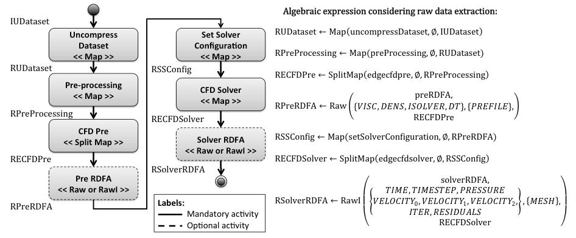
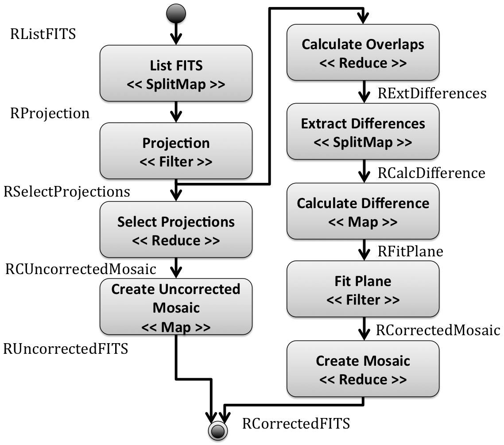
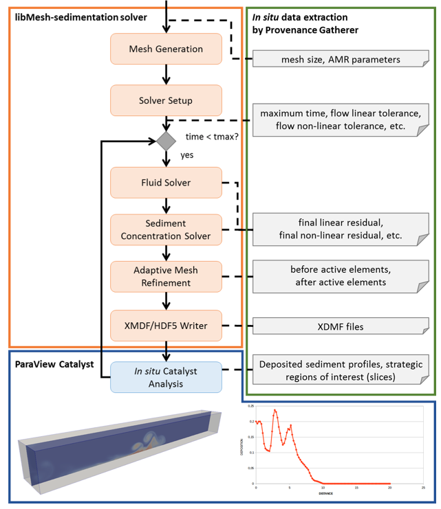

Using A-Chiron SWMS, we modeled a workflow for analyzing the flow of an incompressible fluid on a cavity problem. This case study uses CFD software and the modeled workflow is named as CFD workflow. This CFD software is a Fortran90 finite element application where the kernel of the computational solution consists of a fully implicit predictor – multicorrector time integration scheme as described in this paper. The generalized trapezoidal rule is employed in the time discretization, with an adaptive time stepping procedure based on a proportional-integral-derivative (PID) controller. Raw and RawI algebraic operators are not presented in the original workflow algebra presented in our VLDB paper. However, those operators provide the raw data extraction and indexing from multiple files during the execution of computer simulations.

Figure 1. CFD workflow
Montage is a toolkit used for assembling astronomical images into custom mosaics, suitable for large-scale processing of the sky. Montage provides astronomers a service to build mosaics in Flexible Image Transport System (FITS) format, according to the common astronomy coordinate systems, arbitrary image sizes, and rotations, and all World Coordinate System map projections.
We use this toolkit to model and execute an astronomy computer simulation using A-Chiron SWMS in a cluster environment, as presented in Figure 2. In this website, we provide a tutorial to execute a computer simulation using Montage and A-Chiron SWMS ( Montage tutorial).

Figure 2. Montage workflow
Parallel adaptive mesh refinement and coarsening (AMR) are optimal strategies for tackling large-scale sedimentation simulations. libMesh is an open-source finite-element library that supports parallel AMR and has been used in several multiphysics applications. As an application built upon the libMesh library, libMesh-sedimentation simulates turbidity currents typically found in geological processes. Considering this computer simulation, we coupled libMesh-sedimentation to the DfAnalyzer tool and ParaView Catalyst to manage provenance data and to analyze raw data in situ. Figure 3 presents an overview of this approach and more information can be found in our Supercomputing poster.

Figure 3. libMesh-sedimentation coupled to DfAnalyzer tool and ParaView Catalyst